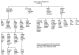

Person Sheet
Name
Donald* CARGILL
604
, 10G Grandfather
Death
abt 1623

Misc. Notes
Vicar of Rattray in Perthshire, Scotland
648, v117p243
Spouses
1
Margaret* BLAIR
604
, 10G Grandmother
Children
John*
(~1582-1632)
Janet
(-~1671)
Grisell
(-<1662)
Laurence
(-1657)
Last Modified 13 Apr 2001
Created 26 Jun 2001 by Reunion for Macintosh
Contents
*
Index
*
Surnames
*
Contact
*
Web Family Card